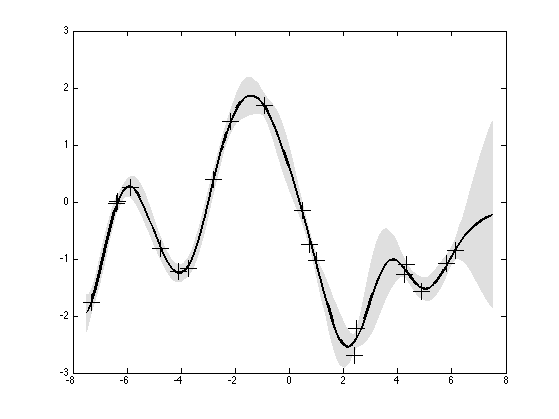
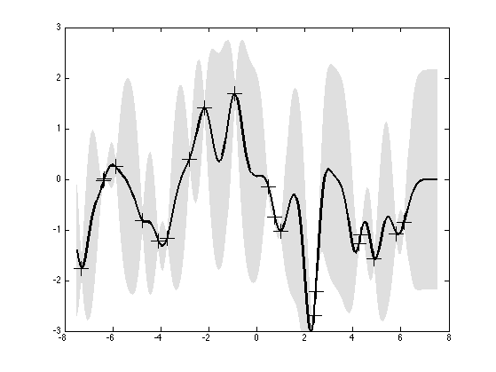
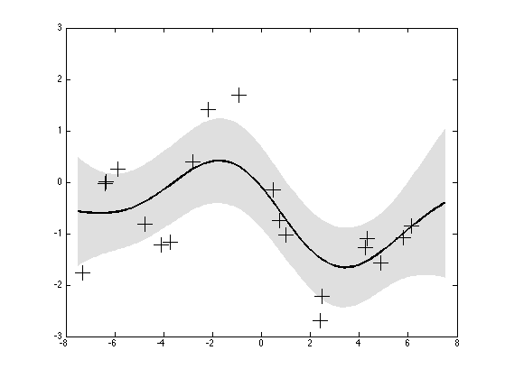

Visualize the effect of change the hyper-params for a 1d GP regression
based on demo_gpr by Carl Rasmussen
Contents
Generate data
% This file is from pmtk3.googlecode.com n = 20; rand('state',18); randn('state',20); covfunc = {'covSum', {'covSEiso','covNoise'}}; loghyper = [log(1.0); log(1.0); log(0.1)]; x = 15*(rand(n,1)-0.5); y = chol(feval(covfunc{:}, loghyper, x))'*randn(n,1); % Cholesky decomp. xstar = linspace(-7.5, 7.5, 201)'; hyps = [log(1), log(1), log(0.1);... log(0.3),log(1.08),log(0.00005);... log(3),log(1.16),log(0.89)];
compute post pred and plot marginals
for i=1:size(hyps,1) loghyper = hyps(i,:)'; [mu, S2] = gpr(loghyper, covfunc, x, y, xstar); S2 = S2 - exp(2*loghyper(3)); % remove observation noise figure; f = [mu+2*sqrt(S2);flipdim(mu-2*sqrt(S2),1)]; fill([xstar; flipdim(xstar,1)], f, [7 7 7]/8, 'EdgeColor', [7 7 7]/8); hold on plot(xstar,mu,'k-','LineWidth',2); plot(x, y, 'k+', 'MarkerSize', 17); axis([-8 8 -3 3]) printPmtkFigure(sprintf('gprDemoChangeHparams%d', i)); end  